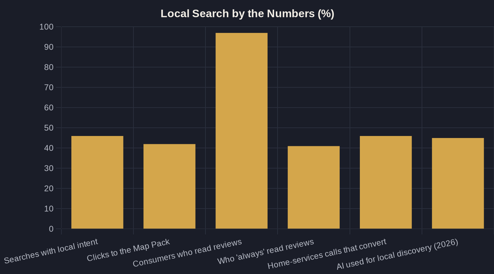

Local SEO for Service Businesses: How to Get Found on Google
Nearly half of all Google searches are local. Here is the owner-to-owner playbook for showing up in the Map Pack, earning reviews, and tracing local search to booked jobs.
Key takeaways
- Nearly half of Google searches are local — a complete Google Business Profile is the cheapest way to capture that demand.
- The Map Pack gets about 42% of local clicks; rank in the 3-pack before chasing anything else.
- Reviews decide who gets chosen — 97% of consumers read them — so make the ask routine and reply to every one, including the bad ones.
- If you do not track calls, you cannot see your real ROAS; the phone is still where service-business money is made.
- The same accurate profile and reviews that win local SEO now feed AI assistants — do the fundamentals and you are already built for AI search.
What Local SEO for a Service Business Actually Means
Local SEO for a service business is the work of getting your company to appear when someone nearby searches for what you do — and getting chosen once they see you. It is not abstract web traffic. It is the homeowner three miles away typing "emergency plumber near me" at 9pm, or the patient looking for a clinic that takes their insurance. Roughly 46% of all Google searches are looking for local information, which means nearly half of all search demand is exactly the demand a service business is built to serve.
The goal is simple to state and harder to execute: capture that local intent and turn it into booked jobs. Done well, local SEO for a service business produces calls, form fills, and direction taps that map directly to revenue — the same path my Owner's Math framework traces from impression to lead to booked job. The candor here matters: most of this is unglamorous, repeatable work, not a growth hack.
Three surfaces decide whether you get found: your Google Business Profile, the Map Pack (the cluster of three businesses Google shows above the regular results), and the local pages on your website. Reviews sit underneath all three. Get those right and you compete on equal footing with bigger competitors; ignore them and you end up paying for ads to do work that organic listings could do for free — a tradeoff worth weighing deliberately in local SEO versus Google Ads.
One reframe before the tactics: local SEO is a chosen-business problem before it is a found-business problem. Showing up is necessary but not sufficient — a prospect compares two or three listings in about ten seconds and picks one. So every section below is built around both halves of the job: rank where buyers look, then give them a reason to pick you over the competitors sitting right beside you.
Start With Your Google Business Profile
If you do one thing first, make it your Google Business Profile. It is the free listing that feeds both Google Search and Google Maps, and it is the single biggest lever most service businesses leave half-finished. Google's own data shows customers are 2.7x more likely to consider a business reputable and 70% more likely to visit when it has a complete profile — completeness alone changes whether you get chosen.
Complete means every field, not just the name and phone number. At a minimum, a profile that earns its ranking has:
- The most specific primary category, plus accurate secondary categories
- Every service listed with a short, plain-English description
- Real photos of your team, trucks, and completed work — refreshed, not stock
- Hours that are actually correct, including holidays and emergency availability
- A name, address, and phone number identical to the ones on your website
That last point matters more than it looks: inconsistent name, address, and phone details across your site and directories confuse Google and quietly suppress your ranking. Consistency is free, and it is one of the few signals fully in your control.
Photos deserve a specific mention because owners underrate them. Listings with real, current images of your crew and finished work get more clicks and calls than bare profiles, and they quietly answer the prospect's unspoken question — are these people legitimate and local? Swap in fresh photos every quarter so the listing never looks abandoned. This is detailed enough to deserve its own checklist, which is why I keep a full Google Business Profile optimization checklist as a companion to this guide.
Win the Map Pack (the Local 3-Pack)
The Map Pack — also called the local 3-pack — is the boxed set of three businesses Google shows at the top of local results, with a map and review stars. It is the most valuable real estate in local search. About 42% of people who run a local search click a result inside the Map Pack, more than the organic links beneath it, so ranking in those three spots captures the single largest share of local clicks.
Google ranks the 3-pack on three things: relevance (does your profile match the search), distance (how close you are to the searcher), and prominence (reviews, links, and overall reputation). You cannot move your building, but you can sharpen relevance with accurate categories and services, and build prominence with steady reviews and local citations. That is most of the game.
Prominence is the lever you control. Citations — consistent mentions of your business on directories like Yelp, Angi, and industry sites — reinforce that you are a real, established operator in your area. They will not vault you past a closer competitor on their own, but combined with review velocity and a tight profile, they move you up inside the pack where distance is roughly equal.
Two practical notes for service-area businesses. First, if you go to customers rather than the reverse, hide your address and set your service areas precisely — listing towns you do not actually serve dilutes relevance and can trigger filtering. Second, your business name in the profile must be your real name, not "Best Plumber Phoenix"; keyword-stuffed names violate Google's guidelines and get reported by competitors. The full playbook for closing the distance gap lives in how to rank higher on Google Maps, and it pairs with the local-pages work later in this guide.
Reviews Are Your Reputation Engine
Reviews are not a vanity metric — for a service business they are the deciding factor at the moment of choice. 97% of consumers read online reviews for local businesses, and 41% say they always read them before picking a company. Volume, average rating, and recency all feed the decision, and they also feed the prominence signal that ranks the Map Pack.
The two jobs are getting more reviews and handling the ones you get. A simple, consistent ask after every completed job will outperform any clever campaign — the mechanics are in how to get more Google reviews the right way. The point is to make the ask routine, not occasional.
Recency is the part owners forget. A 4.8 rating built entirely from reviews two years ago reads as a business that has gone quiet; a steady trickle of recent reviews signals one that is busy and consistent right now. Build a system that produces a few new reviews every week and you satisfy both the prospect reading them and the algorithm weighing them.
Responding matters as much as collecting, especially when the review is negative. A calm, specific public reply to a bad review reassures the next reader far more than a wall of five stars ever could; how to respond to reviews, especially the bad ones walks through the templates. One honest caution: do not buy reviews or gate them so only happy customers can post. Beyond violating Google's policies and risking your profile, fake-looking patterns are easy to spot and erode the exact trust you are trying to build.
| Local search signal | What the research shows | Owner's-Math implication |
|---|---|---|
| Search intent | 46% of all Google searches are local | Nearly half your category's demand has local intent — show up for it |
| Map Pack clicks | 42% of local-search clicks go to the 3-pack | The 3-pack is the biggest click source — rank there first |
| Profile completeness | 2.7x more reputable, 70% more likely to visit | A complete Google Business Profile is your cheapest conversion lever |
| Reviews | 97% read reviews; 41% always do | Volume, rating, and recency decide who gets called |
| Phone leads | 46% of inbound home-services calls convert | Track calls or you cannot see your real ROAS |
| AI discovery | ChatGPT use for local jumped 6% to 45% (2025 to 2026) | The same accurate profile and reviews now feed AI answers |

Measure What Local SEO Actually Returns
Here is where most local SEO advice stops and Owner's Math begins. Rankings and traffic are inputs; booked jobs and revenue are the output. If you cannot trace a search to a call to a booked job, you are guessing — and guessing is expensive. ROAS (return on ad spend) is the number that settles budget arguments, but you can only calculate it if you measure the calls.
For service businesses the phone is still where the money is. In home services, 46% of inbound phone leads convert on the call, and a large share of calls from digital marketing are qualified — which makes the click-to-call from a local listing one of the highest-converting actions a prospect can take. If you are not using call tracking, that entire conversion path is invisible in your reporting.
A workable local-SEO scorecard tracks a short chain, not a dashboard of vanity numbers:
- Calls and form fills from your profile and local pages
- How many of those became booked jobs or appointments
- Average job value and the revenue behind each
- What you spent to produce them — and how fast that spend pays back
Treat rankings and traffic as leading indicators and revenue as the lagging one. A jump in Map Pack visibility should show up as more calls a few weeks later, then more booked jobs after that. When the leading indicator moves but bookings do not, the problem is usually conversion — a slow phone answer, a weak profile photo, or thin reviews — not your ranking. That discipline is what separates local SEO for a service business from "doing some SEO," and it lets you answer the only question that matters at budget time, which I break down in local SEO versus Google Ads.
Local Pages, and Where Local Search Is Headed
Your Google Business Profile gets you into the Map Pack; your website's local pages get you into the organic results below it and give Google the context to trust you. A service business covering several towns needs real pages for the services and areas it serves — not thin doorway pages, but genuinely useful ones with local detail, proof, and a clear call. The approach that actually ranks is covered in service-area and city pages that rank.
This work compounds in a direction most owners have not priced in yet. Consumer use of AI tools like ChatGPT to find local businesses jumped from 6% in 2025 to 45% in 2026, making AI the third most-used local-discovery source behind Google and Facebook. The accurate profile, structured services, and strong reviews that win local SEO are the same signals AI assistants pull from when they answer "who's a good plumber near me" — so there is no separate AI strategy to buy.
That is the quiet advantage of doing local SEO for a service business properly: it pays off in Google today and in AI answers tomorrow, off the same foundation. The owners who win are not the ones chasing every new tactic — they are the ones who get the profile, the Map Pack, the reviews, and the measurement right, then keep them right.
If you want this mapped to your own numbers — what local search is worth in your market and where your next dollar actually pays back — that is the conversation I have with owners every week. Book a call and we will run your Owner's Math together, or join the newsletter, where I break down one local-growth system at a time.
Sources
- HubSpot — Local SEO Stats (citing GoGulf) (2024)
- BrightLocal — Local SEO Statistics (citing Google) (2026)
- Backlinko — Local SEO Statistics (2024)
- BrightLocal — Local Consumer Review Survey 2026 (2026)
- Invoca — Call Conversion Benchmarks Report: Home Services 2025 (2025)
- BrightLocal — Local Consumer Review Survey 2026 (AI Trust) (2026)
Want this run on your numbers?
Book a call and we will run the Owner's Math on your business — clear numbers, a straight plan, no pitch. Or read the free Playbook first.